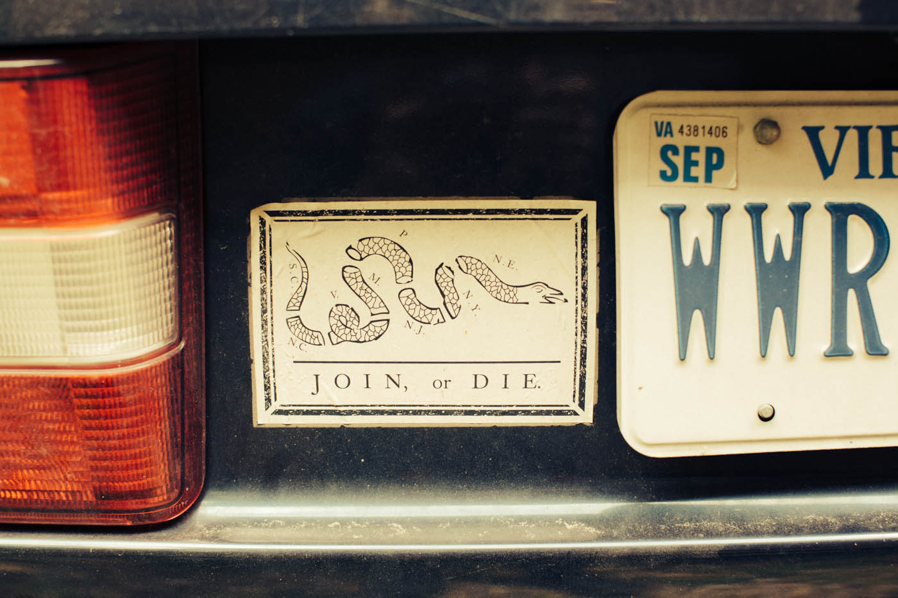

FEATURE 1 – WORDS BY Sunny Eckerle
After what seemed like an endless winter, longer and colder than usual, the final weekend of May offered a much needed warmth. With a 24-pack of High Life in the trunk and the windows down, we headed west. Soft hills rose into the Shenandoah Mountains. Cell service waned and eventually dropped out. Our landmark dependent directions became our only guide. "Over the bridge and right at the yellow mail box." We wound down a one-lane dirt path, climbing higher into the hills.
And so we arrived at Forest Floor Studios, just shy of Shenandoah National Park. It’s easy to see why Daniel Bachman, the 24 year-old Virginia native, has chosen to record here. Previous releases from the finger-picking visionary were born at Forest Floor, as is his latest and last album on Tompkins Square, Jesus I’m a Sinner.
The one room studio is unexpectedly well stocked. It's absolutely off the beaten path, yet no less legitimate for it. Surrounded by only the wind brushing through the leaves, the faint trickling of a stream, and the singing of the local bird residents, it's a fitting backdrop for the scratch and twang of Daniel's homey and rural finger-style creations.
Hellos are exchanged with Daniel, beers are opened, and we're introduced to Forrest Marquisee, the producer at Forest Floor Studios. Inside the small studio, Daniel gets to work, starting where he and Forrest left off the day before. Much of the recording is finished when we arrive on Saturday, Daniel having been at the studio for a few days already. After only one false start, Daniel records the final track for the album with the front door open, the sounds from outside creeping through the screen door.
Our remaining time is spent outside, learning about the studio, Rappahannock County, and Daniel's home state of Virginia. We head to the stream not 50 feet from the studio, and stand barefoot in it as Daniel tells us all about where we are, often pointing one way or another to a landmark that correlates to one of his songs. He knows this place well, his casual explanations clearly well worn from time and use. He enjoys sharing his love for his home, which he does most successfully through his music. Sun Over Old Rag, Seven Pines, 218 to Caledon - all song titles of his as well as references to the Old Dominion.
Forrest gives us a tour of the area including a botany lesson, complete with tastings. We all pluck a bud of honeysuckle and carefully pull out the stemen for a small taste of sweetness. We're invited into Forrest's home, just up the hill, to see his father's guitar workshop and even try our hand at a few of the fully handmade instruments.
As the morning warms into afternoon, rainclouds begin to creep across the sky and signal our time to move on. Forest Floor Studio is only the first stop of the day. In a semi-frantic rush, we help Daniel grab the last of his equipment, round up the unopened beers from the porch of the studio, and hop into Daniel's timeworn Volvo to start our trek back east, just as the rain starts to fall. The old car has served him well. This year alone, he’s spent 9 months on the road. This car has carried him across the country and back for many other years of touring and now, it carries us back east.
As we wind down the narrow lane that brought us in, the mountains give way to a flatter landscape. The brief rain has left the spring greenery damp and warm, the humidity creeping in the open windows.
Eventually, the car swings around a wide bend somewhere near Culpepper, and Daniel points out Mount Pony, a small, nondescript hill just off the highway. He tells us that, what to any passerby would appear as nothing more than a lump on the land, is actually a secret mountain fortress. "The inside is hollow. The Federal Reserve used to keep gold in there, back in the sixties and seventies." He points out a strange structure nearer the road we pass as the old guard hut.
The depth in which Daniel knows this land and these places is only reinforced as the day goes on. Few people have as visceral and strong a connection to where they grew up as he does. He's moved away before, having lived in Philadelphia for a time, but it's clear he's never really left this place, in mind or spirit. The music he creates mirrors this region in its loose style, its extreme but unassuming beauty, its charming imperfectness. Today we've been introduced to his muse and given a deep understanding of the roots of what he creates.
Our last destination is Fredericksburg. The house, Daniel's childhood home, is dim and cool, its stillness disturbed only by the soft ticking of a clock and the few bits of dust that lazily drift in the sunlight that filters through the kitchen windows. The walls are covered in treasures we don't have time to explore. There are history books, artwork, and relics of Virginia's past, each with a story Daniel could tell, no doubt.
Daniel decides against using his Guild guitar that we heard earlier in the day, instead choosing a 12-string that's perched in the living room, as though waiting for him. After a quick bit of tuning by ear, we head into the green and sunny backyard. Daniel takes a seat on the back patio with his guitar and as the sun begins to sink, we end the day in the place where it all began.